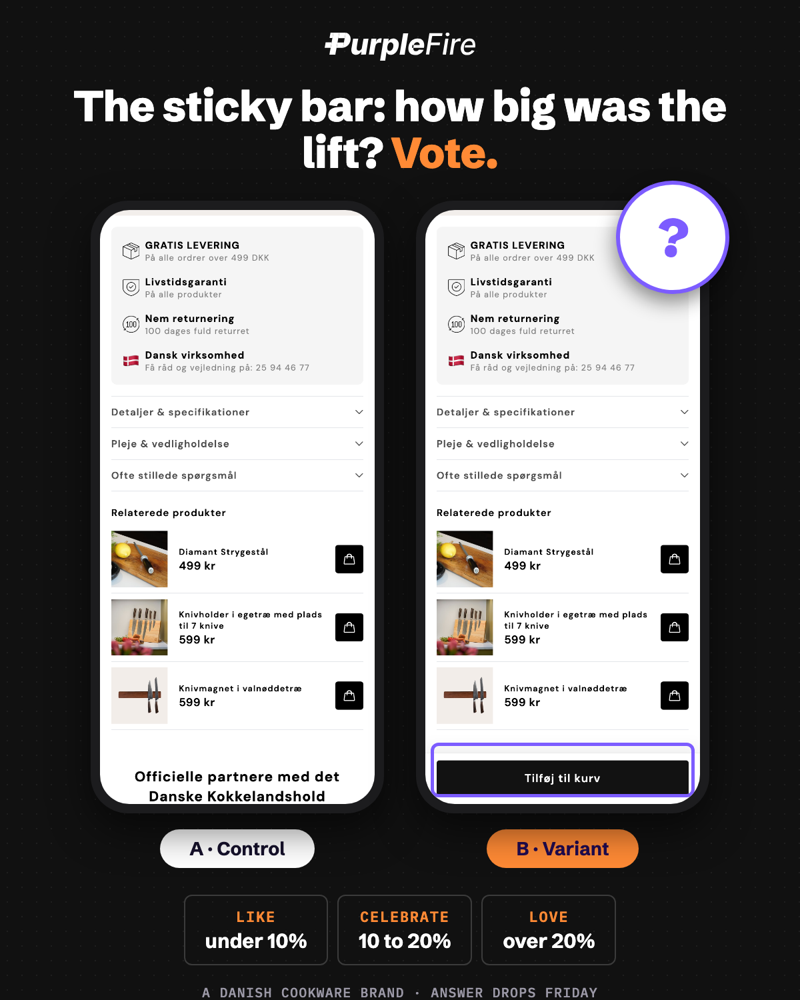
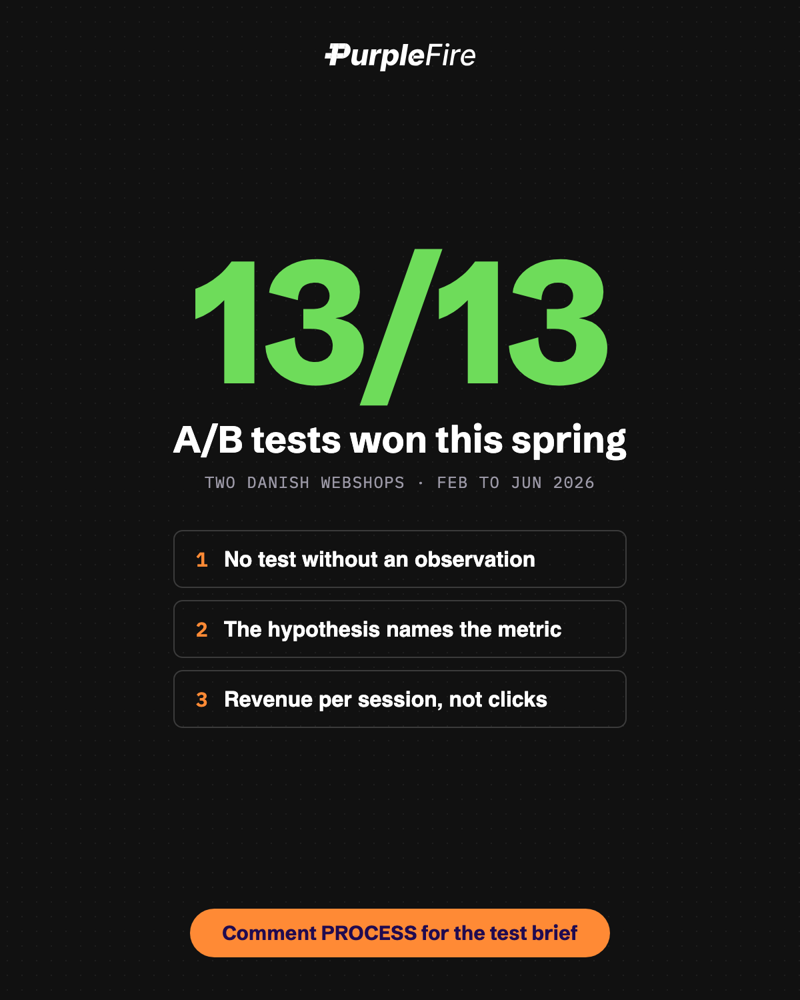
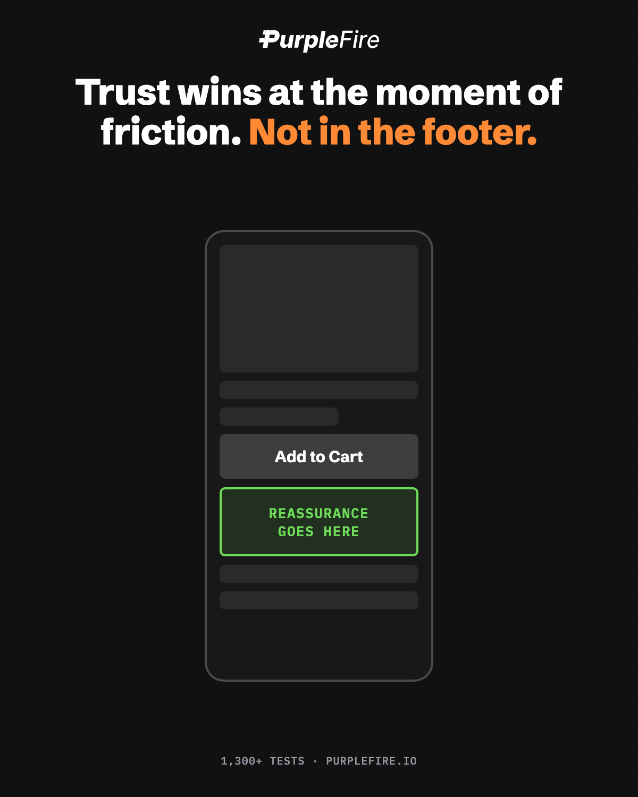
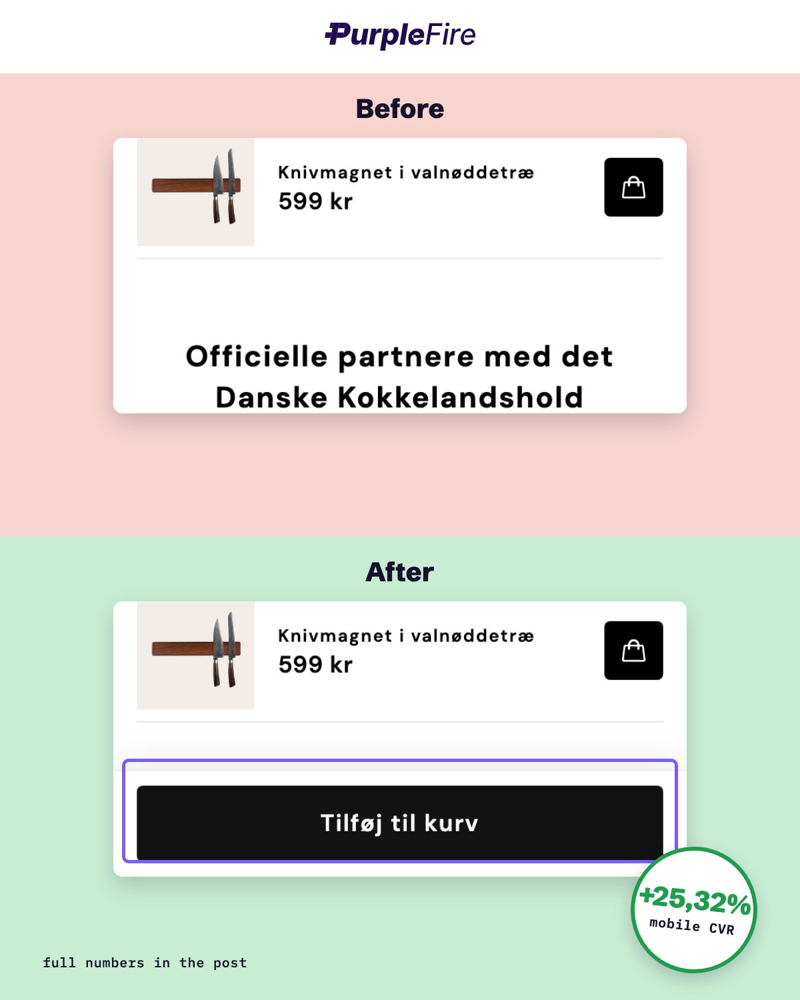
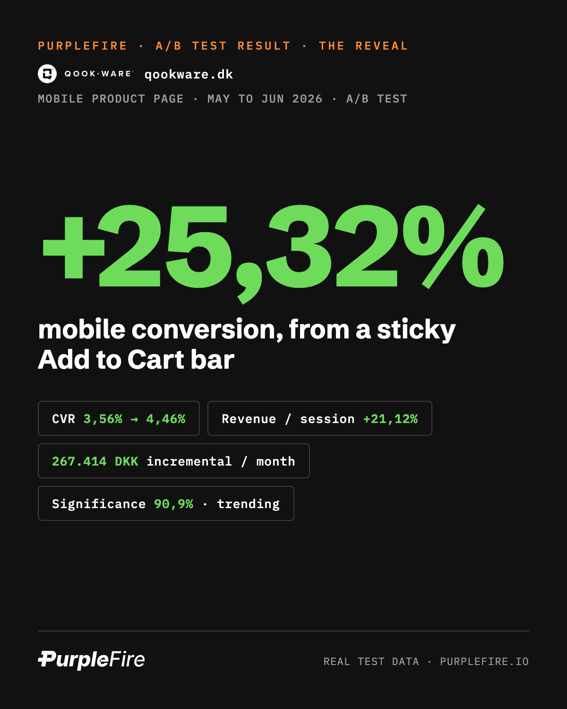
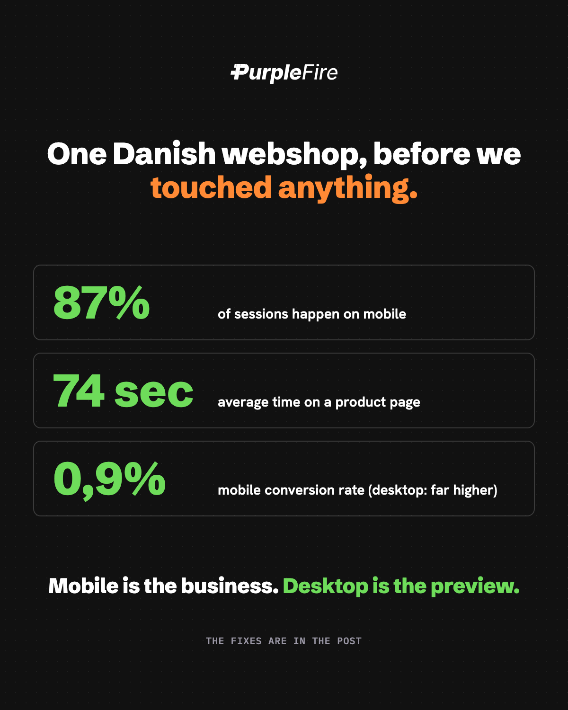
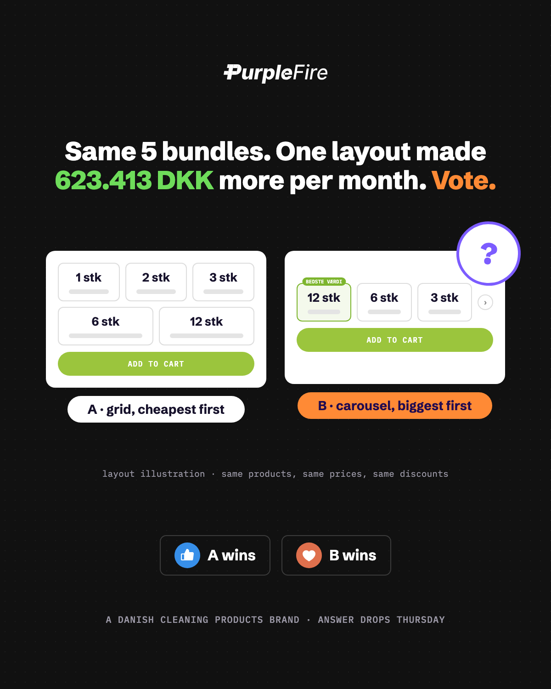
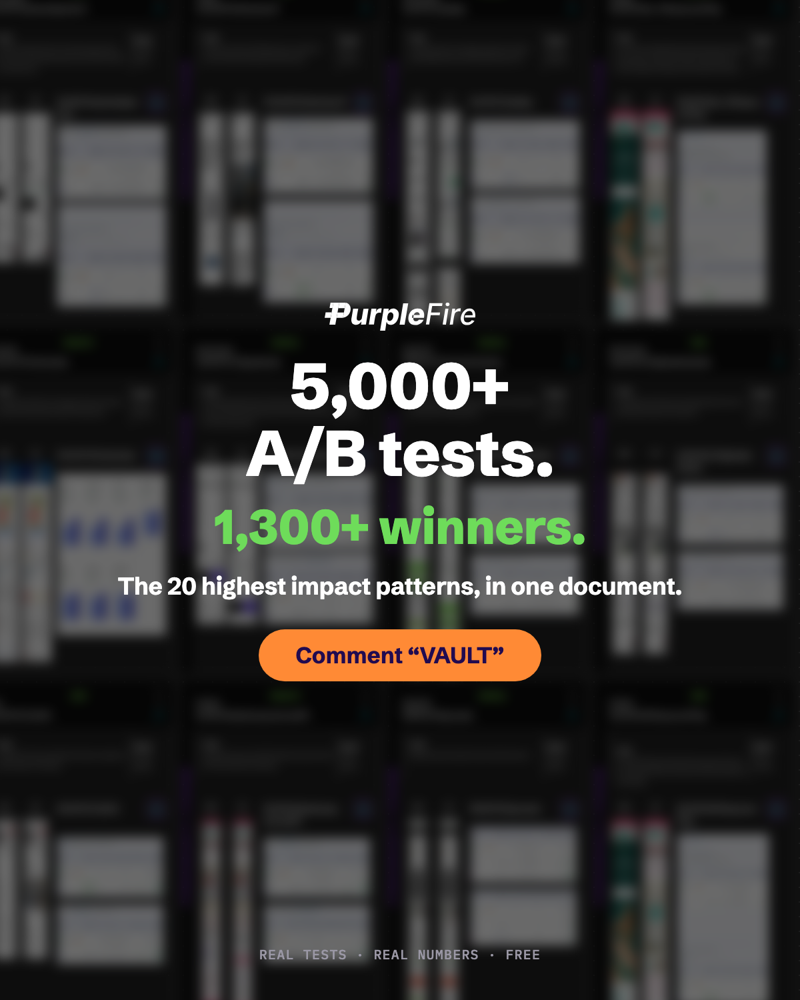
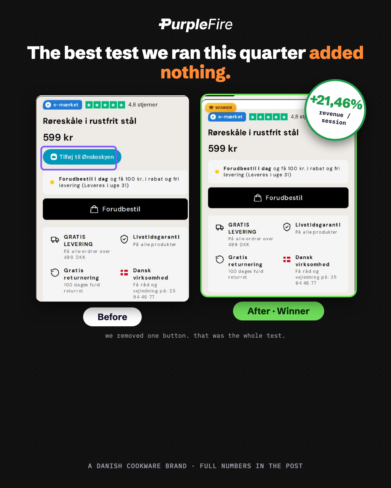
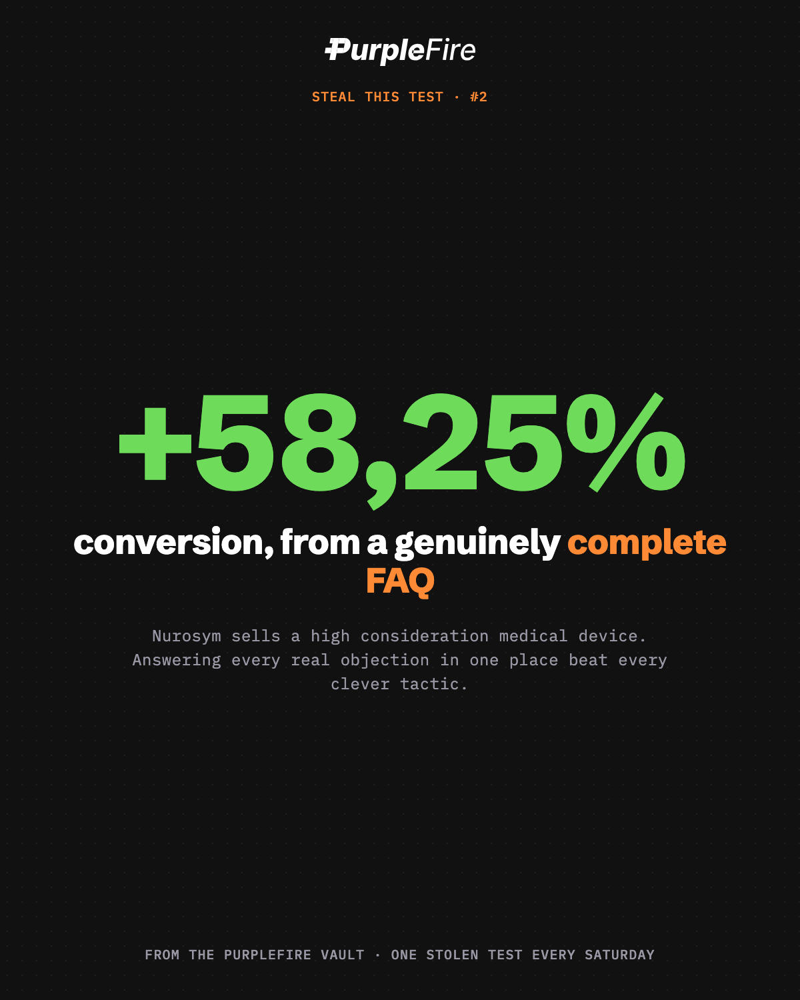

July 15 to September 13, 2026, posting daily. Every post anchored to a real test, a real number, or a real pattern from 5,000+ tests and 1,300+ documented winners. Month 1 is pre written proof; month 2 reacts to real outcomes and pivots the audience toward BFCM. Goal: 4 to 6 qualified conversations with Danish and Nordic Shopify founders.
56
posts, daily
19
results + vault steals
24
knowledge + sunday notes
8
guess the winner votes
5
lead magnets + offers
~1.5h
Daniel's total effort
Two decisions before anything publishes
Client naming. Posts name PH Import and Qookware. Get a one line OK from each founder. If either declines, swap to "a Danish cleaning products brand" / "a Danish cookware brand". The numbers stay identical.
Numbers discipline. Only one test (T05 on the cleaning brand, +19.13% CVR) is at 99.7% statistical significance. Everything else is 78 to 91% ("trending"). The copy states measured lifts from test windows without claiming statistical proof. Do not round the language up when posting or replying to comments.
Prep week · Jul 15 to 19
Tick items off as they land. Progress saves in your browser.
The 56 posts
Filter by type, click a card for the full copy, hit Copy to grab it paste ready. The checkbox marks a post as published. Tuesdays are "guess the winner" votes: the audience votes with reactions, and that week's reveal post opens with the real vote split (fill it in before posting). Saturdays run the "Steal this test" vault series and Sundays run "Sunday notes" (recap or reflection, never a pitch). Month 2 cards marked REACTIVE get final copy drafted 2 to 3 days ahead from real month 1 outcomes; the framework and hook live on the card.
The highest ROI pixels on a product page sit directly under the Add to Cart button.
We proved it in May on one of our clients: a Danish store selling cleaning products.
Their PDP had a "recommended products" block above the buy button. Data showed it earned 1% of clicks. The Add to Cart button next to it: 7%.
So we killed the upsell and tested two variants of reassurance in that exact spot. The winner: simple assurance icons directly below Add to Cart, covering delivery time, return policy, and guarantee.
Result over 60 days:
• Conversion rate: 6.3% to 7.5% (+19.13%)
• Revenue per session: +17.5%
• 99.7% statistical significance
• 776,058 DKK per month in incremental revenue
The lesson: shoppers hesitate at the exact moment of commitment, not while browsing. Reassurance placed at that moment outperforms any upsell you can put there.
Check your own PDP. What sits directly under your buy button, and is it answering the question your customer is silently asking?
Tue
Jul 21
Post G1 · static image · reaction vote
Vote: how big was the sticky ATC lift?
Guess
Source
Qookware T04. Direction is guessable, so the vote is about magnitude.
Visual
Side by side phone crops from Qookware-cro-deck.pdf page 7: control PDP vs sticky bar variant, labeled A and B. Do not show the result.
Reveal
Post 4 on Friday. Open it with the vote outcome (fill in the real split) and name the closest guess.
Post image · latest version

v2 phone vote card · current
Post copy
DC
Daniel Chabert
Founder, PurpleFire
Time to test your CRO instincts. Real A/B test, real money.
A Danish cookware store. 87% of its traffic is mobile, and the average shopper scrolls past the Add to Cart button in 74 seconds, then never scrolls back.
Variant A: the standard product page.
Variant B: same page, plus a sticky Add to Cart bar that appears when the native button scrolls out of view.
B won. That part you'd guess. The real question is by how much.
How big was the mobile conversion lift?
Like = under 10%
Celebrate = 10 to 20%
Love = over 20%
Bonus round: comment your exact percentage. Closest guess gets named in Friday's reveal.
Full breakdown Friday, including the monthly revenue number.
Wed
Jul 22
Post 2 · the process post
13 tests, 13 winners. The boring process behind it.
Knowledge
Visual
Stat card: "13 / 13" huge with the two deck cover totals beneath, or the three rules as a simple typographic card.
CTA
Comment PROCESS for the test brief one pager (asset on the production list). Ties into Friday's sticky ATC reveal.
Post image · latest version · PROCESS gate asset: test brief PDF

v2 process card · current
Post copy
DC
Daniel Chabert
Founder, PurpleFire
This spring we ran 13 A/B tests across two Danish webshops. All 13 won. Combined, they're worth about 3.8 million kroner per month in incremental revenue.
That's not luck. And honestly, it's not genius either. It's three boring rules.
Rule 1: no test without an observation. We never start from "let's try a new button color." We start from data. On one store, 87% of sessions were mobile, and the average shopper scrolled past the Add to Cart button in 74 seconds and never saw it again. That's an observation worth testing.
Rule 2: the hypothesis names the metric. "If we add a sticky Add to Cart bar on mobile, revenue per session goes up, because the button stays visible when intent peaks." If we can't write that sentence, we don't build the test.
Rule 3: we measure revenue per session, not clicks. Clicks flatter you. Revenue doesn't lie.
That sticky bar from rule 2? +25% mobile conversion. Full breakdown here on Friday.
I've turned our exact test brief template into a one pager. Comment PROCESS and I'll DM it to you. (Connections only, so the DM goes through.)
Thu
Jul 23
Post 3
Trust wins at the friction point, not in the footer
Knowledge
Source
Pattern across PH Import T05, Qookware T01, and the vault (German Car Accessories shipping test).
Visual
Simple graphic: PDP wireframe with a green zone under the ATC button labeled "highest leverage real estate".
Post image · latest version

v2 statement card · current
Post copy
DC
Daniel Chabert
Founder, PurpleFire
After 5,000+ A/B tests, one pattern keeps repeating among the 1,300+ winners:
Trust wins tests when it's placed at the moment of friction. Not in a footer. Not on an About page. At the exact pixel where the customer hesitates.
Three examples, two from our current programs and one from the vault:
1. Assurance icons directly below Add to Cart: +19% conversion (99.7% significance).
2. USP pointers moved from below the fold to directly under the price on a cookware store: +14% revenue per visitor. Why? 56% of visitors bounced within 74 seconds, before they ever scrolled to the USPs.
3. From the PurpleFire vault: a free shipping message placed directly above the buy button on German Car Accessories: +44% revenue per visitor.
The mistake most stores make is treating trust as decoration. Badges everywhere, guarantees nowhere near the button.
The fix is placement, not volume: find where people drop off, then answer their objection at that exact spot.
Where does your drop off happen? That's where your guarantee belongs.
Fri
Jul 24
Post 4 · static image
+25.32% mobile CVR from a sticky Add to Cart bar
Results
Source
Qookware T04, sticky mobile ATC.
Visual
Template card: "+25.32% CVR" huge, subline "Mobile PDP, 267,414 DKK/month", before/after phone crops from Qookware-cro-deck.pdf pages 7 to 8.
Post image · latest version
v3 phone mockup · current

red/green panels

typographic
Post copy
DC
Daniel Chabert
Founder, PurpleFire
87% of this store's traffic is mobile. Its product page was designed on a 27 inch monitor.
This client sells premium cookware in Denmark. Great products, strong reviews, 4.8 stars.
But mobile converted at 4.9% while desktop did 7.2%. And the session recordings showed why: average mobile dwell time on the PDP was 74 seconds, and shoppers scrolled past the Add to Cart button early, then never scrolled back.
The friction wasn't intent. It was visibility.
The test: a sticky Add to Cart bar that appears once the native button scrolls out of view.
Result over the test window:
• Mobile conversion: +25.32%
• Revenue per session: +21.12%
• 267,414 DKK per month incremental
My take after hundreds of mobile tests: stop scaling desktop designs down. Design the mobile PDP first, because that's where your customers actually are.
Quick check for your own store: open your bestseller on your phone, scroll for 5 seconds, and see if you can still buy without scrolling back up.
Sat
Jul 25
Post S1 · steal this test
We made the hero SMALLER: +69.54% RPV
Vault
Source
Natures body, from the vault. Verify the niche description with Daniel before posting.
Visual
Single before/after crop or plain text. Keep it light, it's Saturday.
Post copy
DC
Daniel Chabert
Founder, PurpleFire
Steal this test #1.
We made a homepage hero SMALLER and revenue per visitor jumped 69.54%.
Natures body's mobile homepage opened with a full screen hero. Nice image, brand tagline, zero products visible. Every shopper's first act was scrolling past it.
The change: cut the hero height so the navigation and the first products peek into the first screen, pulling attention downward.
Result: +69.54% revenue per visitor.
Steal it if your mobile hero fills the whole first screen. Your hero is not the product. The product is the product.
(From our vault of 1,300+ winning tests. One stolen test every Saturday.)
Sun
Jul 26
Post N1 · sunday notes · evergreen
What 5,000 tests taught me about being sure
Sunday
Format
Slow, reflective, zero pitch. Text only.
Post copy
DC
Daniel Chabert
Founder, PurpleFire
5,000 A/B tests taught me one uncomfortable thing about my own judgment.
I'm wrong about what will win roughly as often as I'm right. After a decade in CRO, with all the pattern knowledge in the world.
Ask any honest optimizer: predictions about which variant wins barely beat a coin flip. Most tests lose. And the winners are rarely the ones everyone in the room was sure about.
That sounds like an argument against expertise. It's the opposite. Expertise isn't knowing the answer. It's knowing which questions are worth asking, and then having the discipline to let the data answer instead of your ego.
The redesign you're sure about. The headline you love. The feature you're convinced customers want. All hypotheses. The market grades them, not us.
That's the whole reason testing exists: not because we're smart, but because we're reliably, measurably not.
Enjoy your Sunday.
Week 2
Mobile + Vault
Jul 27 to Aug 2
Mon
Jul 27
Post 5
Mobile is the business. Desktop is the preview.
Knowledge
Source
Qookware observations (T03 + T04) and the spring mobile test set.
Visual
Stat card, three lines: "87% of sessions. 74 seconds. 0.9% CVR." Dark card.
Post image · latest version

v1 stat card · current
Post copy
DC
Daniel Chabert
Founder, PurpleFire
This store got 87% of its traffic from mobile and converted it at 0.9%. Most founders would draw exactly the wrong conclusion.
The full picture, before we touched anything:
• 87% of sessions on mobile
• 74 seconds average time on a product page
• Mobile homepage conversion: 0.9%. Desktop visitors stayed 137 seconds on that same homepage; mobile visitors gave it 56.
Most founders read this and conclude "mobile shoppers just browse."
Wrong conclusion. Mobile shoppers buy fine when the page respects how they behave: fast scroll, thumb reach, zero patience for hunting.
What actually moved the needle across our mobile tests this spring:
1. Sticky Add to Cart once the button leaves the viewport (+25% CVR)
2. Collection shortcuts directly under the header, so shoppers reach category pages in one tap
3. Compact bundle selectors that don't push the buy button below three screens of options
4. USPs above the fold, because 56% never scroll past it
None of these are redesigns. Each is one focused change to how mobile shoppers actually move.
If your mobile conversion is less than 60% of desktop, you don't have a traffic problem. You have a thumb problem.
Tue
Jul 28
Post G2 · static image · reaction vote
Vote: which bundle layout made 623K more?
Guess
Source
PH Import T02. A genuine coin flip for most readers.
Visual
Side by side crops from PH-Import-cro-deck.pdf page 3: ascending 2 row grid (A) vs descending single row carousel (B), labeled. Do not show the result.
Reveal
Post 7 on Thursday. Open with the vote split and quote the sharpest comment.
Post image · latest version

v1 layout vote card · current
Post copy
DC
Daniel Chabert
Founder, PurpleFire
Two ways to sell the exact same five bundle options. One of them made 623,413 DKK more per month. Which one?
A Danish store selling cleaning products people buy in bulk. Quantity options: 1, 2, 3, 6 or 12 units.
Layout A: all five options visible in a grid, cheapest first (1 up to 12).
Layout B: a single row carousel, biggest bundles first (12, 6, 3), the rest one swipe away.
Same products. Same prices. Same discounts. Only the layout and the order changed.
Vote:
Like = A (show everything, cheapest first)
Love = B (carousel, biggest first)
Comment your reasoning. The sharpest logic gets quoted in Thursday's reveal, win or lose.
Answer Thursday, with the full post-test data.
Wed
Jul 29
Post 6 · static image · comment gate
The Vault: 5,000+ tests and the 1,300 winners, comment VAULT
Lead magnet
Asset
"Vault Top 20" PDF built from the vault index (prep week task 4).
Visual
Card: "5,000+ A/B tests. 1,300+ winners." with a blurred grid of test cards behind it.
Mechanics
Reply to every VAULT comment, DM the PDF within the hour. Connections only, say so in the post.
Post image · latest version

v1 vault magnet card · current
Post copy
DC
Daniel Chabert
Founder, PurpleFire
We've run 5,000+ A/B tests across 100+ ecommerce stores.
Most lost. That's how testing works, and anyone who tells you otherwise is selling something.
The 1,300+ that won are documented in our vault: the hypothesis, the change, the measured lift.
But the winners cluster into patterns. The same 20 changes keep producing revenue, store after store, niche after niche:
• Reassurance at the buy button, not in the footer
• Defaults that anchor to the bundle most people should buy
• Review photos instead of review text walls
• One competing CTA removed near the price
• Shipping clarity before the cart, not inside it
I've pulled the 20 highest impact patterns into one document: the hypothesis, the change, and the measured lift for each, so you can steal the thinking, not just the tactic.
Comment VAULT and I'll DM it to you. (Connections only, so we can actually message.)
Thu
Jul 30
Post 7 · static image
Reordering five buttons: 623,413 DKK per month
Results
Source
PH Import T02, quantity tiers reordered, descending, single row carousel.
We changed the ORDER of five buttons. It was worth 623,413 DKK per month.
Our client sells cleaning products Danes buy in bulk. Their product pages offered quantity bundles: 1, 2, 3, 6, or 12 units, laid out in a two row grid, ascending, cheapest first.
Two problems with that:
1. Ascending order anchors everyone to the cheapest option. The first price you see becomes the reference price.
2. On mobile, the big grid pushed the Add to Cart button an extra screen down. Shoppers had to scroll past every option before they could buy anything.
The test: a single row carousel showing the biggest bundles first (12, 6, 3), with the small quantities one swipe away.
No price changes. No copy changes. Same five options.
Result: revenue per session up 16.57%. Driven by average order value, exactly as hypothesized.
Your customers take the path you pave. If the cheapest option is the default path, that's the one they'll walk.
What's the first price a visitor sees on your bestseller?
Fri
Jul 31
Post 8
The best test we ran this quarter added nothing
Knowledge
Source
Qookware T02, wishlist button removal.
Visual
Before/after crop from Qookware-cro-deck.pdf page 4: PDP with and without the wishlist button.
Post image · latest version

v1 deck crop before/after · current
Post copy
DC
Daniel Chabert
Founder, PurpleFire
The best test we ran this quarter added nothing. It removed one button.
The cookware store's product page had an "Add to Wish List" button sitting directly below the price, above the Add to Cart. Prime real estate, primary visual hierarchy.
Think about what that placement says: before you decide to buy, here's an easier, lower commitment way out.
We removed it. That's the whole test.
Revenue per session: +21.46%.
Every element on a page has a job, and every element also has a cost: attention, hesitation, one more decision before the decision that matters. Wishlists, "compare" widgets, social share buttons, a second CTA to "learn more". Each one is a polite exit door next to the checkout.
A rule we apply constantly: for each element near your buy button, ask "does this move the shopper toward purchase?" If the honest answer is no, test removing it. Subtraction is free, fast to build, and shockingly often it wins.
What's the least useful element within a thumb's reach of your Add to Cart button?
Sat
Aug 1
Post S2 · steal this test
An FAQ lifted conversion 58.25%
Vault
Source
Nurosym, from the vault. Verify the niche description with Daniel before posting.
Visual
Single before/after crop or plain text. Keep it light, it's Saturday.
Post image · latest version

v1 steal card · current
Post copy
DC
Daniel Chabert
Founder, PurpleFire
Steal this test #2.
An FAQ lifted conversion 58.25%.
Nurosym sells a medical grade device. High price, high consideration, and a head full of doubts before anyone buys: does it work for my situation, is it safe, what if it doesn't help?
The change: replace the thin FAQ with a genuinely complete one. Many more questions, each answering a real concern, worry or objection users actually had.
Result: +58.25% conversion and $26,473 in tracked revenue.
Steal it if you sell anything expensive or complex. Unanswered objections don't disappear. They leave with the visitor.
(From the vault. One stolen test every Saturday.)
Sun
Aug 2
Post N2 · sunday notes · recap
Sunday notes, week 2
Sunday
Format
Recap template, filled in 10 minutes on Saturday from the week's real activity. Never pitch on Sundays.
Post copy
DC
Daniel Chabert
Founder, PurpleFire
Sunday notes, week [N].
This week on the test floor:
- [Tuesday's vote: X votes, Y% called the winner]
- [Best comment of the week, credited by name]
- [One thing we shipped or found in the teardowns]
- [One number from a live test, if shareable]
One thing I keep thinking about: [2 to 3 sentences of honest reflection tied to the week's theme].
Next week: [one line teaser for Tuesday's vote or an upcoming reveal].
Enjoy your Sunday. The webshops can wait until Monday.
Week 3
Teardown + AOV
Aug 3 to 9
Mon
Aug 3
Post 9 · the teardown routine
The 5 minute webshop teardown routine
Knowledge
Visual
Numbered checklist card (the 4 checks), or text only.
Role
Seeds the Post 15 teardown offer next week.
Post copy
DC
Daniel Chabert
Founder, PurpleFire
Give me any webshop and five minutes, and I'll tell you where it's leaking money.
The exact routine. Steal it:
1. The phone test. Open your bestseller on mobile and scroll like an impatient customer, because 85 to 90% of visitors are on mobile and they give you about 74 seconds. Can you still buy after five seconds of scrolling? On most stores the buy button is gone by screen two and never comes back.
2. The buy zone. What sits within a thumb's reach of Add to Cart? It should be reassurance: delivery time, returns, guarantee. What's usually there instead: upsells nobody clicks, wishlist buttons, or nothing at all.
3. The anchor. What's the first price a shopper sees? If it's the cheapest option, the store is training people to spend less. Bundles first, singles second.
4. The proof. Are reviews visible near the decision, and do any of them have photos? Text walls get skimmed. Photos get believed.
That's the five minute version. The full version has 40 more checks and real data behind it.
Run the four checks on your own store today. And if you'd rather have me run the full version on it, keep an eye on this feed next week.
Tue
Aug 4
Post G3 · static image · reaction vote
Vote: text reviews vs photo reviews, and the twist
Guess
Source
PH Import T03. The twist (same orders, more revenue) is the comment engine.
Visual
Side by side crops from PH-Import-cro-deck.pdf page 4: text review carousel (A) vs image first carousel (B), labeled. Do not show the result.
Reveal
Post 10 on Wednesday. Shout out the first commenter who named AOV as the mechanism.
Post copy
DC
Daniel Chabert
Founder, PurpleFire
A store has 4,000+ product reviews. Two ways to show them on the product page. One quietly makes 12% more revenue. How?
Version A: the classic review carousel. Star rating, reviewer name, review text.
Version B: image first. The customer's photo leads, stars and text follow.
Here's the twist that makes this one interesting: the winner did NOT get more orders. Both versions produced almost exactly the same number of purchases.
So the vote is double:
Like = A wins
Love = B wins
And in the comments: if the orders stayed flat, where did the extra 12% revenue come from?
The first person to name the mechanism gets a shoutout tomorrow.
Reveal tomorrow with the full numbers.
Wed
Aug 5
Post 10 · static image
Same orders, 12% more revenue: the AOV effect
Results
Source
PH Import T03, image first review carousel. Order counts and AOV verified against the deck post-test slide.
Visual
Template card: "+11.97% RPV, same number of orders" with the review carousel before/after from PH-Import-cro-deck.pdf page 4.
Post copy
DC
Daniel Chabert
Founder, PurpleFire
Same traffic, same number of orders, 12% more revenue.
That's the test result most people don't believe until they see the mechanism.
The store (a cleaning products client of ours) had 4,000+ reviews. Every single one displayed as text. But shoppers buying cleaning products want to SEE the result: the limescale gone, the mold removed, the sofa saved.
The test: replace the text review carousel with an image first version. Customer photo leads, then stars, then the review text.
60 day result:
• Orders: 192 in control, 192 in variant. Identical.
• Revenue per visitor: +11.97%
• Average order value: 336 to 369 DKK
• 260,349 DKK per month incremental
Read that again: conversion barely moved. People who were going to buy bought anyway. But seeing real results from real customers made them confident enough to buy MORE.
Social proof isn't just about convincing the undecided. Done right, it upgrades the already convinced.
If your reviews are a wall of text, you're leaving the second effect on the table.
Thu
Aug 6
Post 11
Nobody reads your product page. Everybody reads your defaults.
Crop from PH-Import-cro-deck.pdf page 11: the "95% PICKS THIS OPTION" badge variant.
Post copy
DC
Daniel Chabert
Founder, PurpleFire
Nobody reads your product page. Everybody reads your defaults.
Three tests from our own programs, one principle:
Test 1: A store's quantity selector defaulted to 1 unit, the lowest possible order. We pre selected the 2 pack and added a badge: "95% picks this option." Revenue per session: +8.73%. Worth 483,434 DKK per month.
Test 2: Same store, different page: bundles reordered so the 12 pack shows first instead of last. +16.57% revenue per session.
Test 3: Tiered volume discounts made visible on products people already buy in bulk. Conversion: +13.52%.
The principle: shoppers don't calculate, they anchor. The first option they see becomes "normal," and everything else gets judged against it. If "normal" is your smallest, cheapest configuration, you've set your own ceiling.
This isn't manipulation. The 2 pack genuinely was what most customers picked. The default just stopped hiding it.
Look at your bestseller right now: what does a visitor get if they change nothing and click buy? That default is quietly deciding your average order value.
Fri
Aug 7
Post 12 · static image
Charisma vs clarity above the fold: +15.70% RPV
Results
Source
PH Import T07, homepage above the fold rerun. The 4,094 reviews and 100,000 customers figures come from the store's own header, visible in the deck screenshot.
Visual
Template card: "+15.70% RPV" with the before/after homepage crops from PH-Import-cro-deck.pdf page 10 (founder photo vs headline + CTA + USPs).
Post copy
DC
Daniel Chabert
Founder, PurpleFire
Their homepage opened with a giant photo of the founder pointing at you. Charming. Also expensive.
The client's original mobile homepage: hero image, then "Most popular" products. No headline. No value proposition. No reason to stay unless you already knew the brand.
New visitors got charisma when they needed clarity.
The test: keep the founder, add the missing 3 seconds of information above the fold:
• Headline: what this store solves, in one plain sentence
• One line of proof: Denmark's best selling cleaning products, direct from the importer
• Two CTAs: shop bestsellers, see bundles
• 4,094 reviews + 100,000 customers, right under the buttons
Revenue per session: +15.70%. Worth 230,884 DKK per month.
The homepage has one job for a first time visitor: answer "am I in the right place?" in under 3 seconds. Brand personality is what makes them remember you. Clarity is what makes them scroll.
Cover your logo and look at your homepage. Could a stranger say what you sell, for whom, and why you, in 3 seconds?
Sat
Aug 8
Post S3 · steal this test
Homepage social proof: +134.35% RPV
Vault
Source
Southeast Softwash, from the vault. Verify the niche description with Daniel before posting.
Visual
Single before/after crop or plain text. Keep it light, it's Saturday.
Post copy
DC
Daniel Chabert
Founder, PurpleFire
Steal this test #3.
Social proof on the homepage: +134.35% revenue per visitor.
Southeast Softwash sells professional cleaning supplies. Their homepage told visitors what they sell. It didn't show who already trusts them or what results look like.
The change: real customer proof moved onto the homepage, front and center, results people can recognize themselves in.
Result: +134.35% revenue per visitor.
Steal it if your homepage describes your products but carries no evidence. Claims tell. Proof sells.
(From the vault. Saturdays are for stealing.)
Sun
Aug 9
Post N3 · sunday notes · evergreen
Why we give work away for free
Sunday
Format
Slow, reflective, zero pitch. Text only.
Post copy
DC
Daniel Chabert
Founder, PurpleFire
People keep asking why we give away teardowns and redesigns for free. Where's the catch?
Here's the honest math.
A teardown costs us a few hours, and most of that is machine time: our AI pipeline reads the store, the reviews and the data, then drafts the analysis. A human makes the calls.
Out of every batch, some store owners just take the findings and fix things themselves. Genuinely great. Danish ecommerce gets a little better, and some of them tell a friend.
And some look at the findings and ask "can you just do this for us?" That's how we prefer to start working with a client: they've already seen the quality, we've already seen their data, and nobody sat through a sales deck.
Free work is only a bad strategy when your work is average. If you trust your standard, giving it away is the cheapest marketing there is.
Enjoy your Sunday.
Week 4
Compounding + Offer
Aug 10 to 16
Mon
Aug 10
Post 13 · the four decision points
Most A/B tests are theater. Here's what wins.
Knowledge
Visual
Simple 4 point diagram (first screen, buy moment, quantity, proof) or the two result cards from posts 1 and 12.
CTA
Comment VAULT (second push).
Post copy
DC
Daniel Chabert
Founder, PurpleFire
Most A/B testing is theater. Button colors, headline synonyms, hero image A versus hero image B. Coin flips dressed up as strategy.
After 5,000+ tests, here's what separates the 1,300+ winners from the noise: winners change what the shopper experiences at a decision point. Noise changes decoration.
The decision points are always the same four:
1. The first screen. Am I in the right place? We added a headline and two CTAs to a homepage that opened with just a photo: +15.7% revenue per session.
2. The moment of commitment, right at Add to Cart. Assurance icons under the button: +19% conversion at 99.7% significance. Our best test this year.
3. The quantity decision. Which option looks normal? Defaults and ordering decide your average cart.
4. The proof moment. Can I trust this? Review photos beat review text every time we've tested it.
If a test idea doesn't touch one of those four moments, we don't build it.
I've packaged the 20 patterns that keep winning into one doc. Comment VAULT and it's yours.
Tue
Aug 11
Post G4 · static image · reaction vote
Vote: spot the difference (kr vs DKK)
Guess
Source
PH Import T04. The most shareable of the four: everyone has an opinion and most will get it wrong.
Visual
Two price tags side by side, large: "129,00 DKK" (A) vs "129 kr" (B). Nothing else on the card. Do not show the result.
Reveal
Post 14 on Wednesday. Open with how many voted "CRO theater" and quote the best explanation.
Post copy
DC
Daniel Chabert
Founder, PurpleFire
Spot the difference. Then tell me if it mattered.
A: 129,00 DKK
B: 129 kr
Same price. Same product. Same page. The only change on the entire site was how the currency is written.
We A/B tested it on a Danish webshop. Did it move revenue?
Like = no measurable difference, this is CRO theater
Celebrate = small but real lift (under 5%)
Love = big lift (over 5%)
If you think it mattered, comment WHY a currency label changes buying behavior. Best explanation gets quoted in tomorrow's reveal.
Answer tomorrow. The number surprised us too.
Wed
Aug 12
Post 14
The most boring test we ran this year: kr vs DKK
Knowledge
Source
PH Import T04, currency symbol micro test.
Visual
Simple card: "kr vs DKK. +2.16%. 131,754 DKK per month."
Post copy
DC
Daniel Chabert
Founder, PurpleFire
The most boring test we ran this year: changing "DKK" to "kr" on price tags.
That's it. Same prices. Same layout. "129,00 DKK" became "129 kr".
Why even test this? Danish shoppers think in "kroner", not in ISO currency codes. "DKK" is how banks write. "kr" is how people talk. Small mismatch, tiny friction, but it sits on every single price a visitor reads.
Result: +2.16% revenue per session. Worth 131,754 DKK per month on this store's traffic.
Nobody puts +2.16% in a case study. But here's the math that matters: this took two hours to build, carries zero risk, and pays out every month forever.
Our 9 test program on this store produced two hero results, a handful of solid singles like this one, and zero losers this round. Stacked together: about 3.3 million DKK per month incremental.
CRO compounds like interest. The hero tests get the applause. The boring ones quietly pay the rent.
What's the smallest mismatch between how you write and how your customers talk?
Thu
Aug 13
Post 15 · text only · the offer
5 free 48 hour teardown spots
Lead magnet
Format
Plain text, no image. Text only often outperforms for offer posts; it reads personal, not campaign.
Mechanics
Comment gate plus direct DM path. Deliver each teardown as a short video within 48 hours, no pitch inside.
Post copy
DC
Daniel Chabert
Founder, PurpleFire
For the past month I've been posting our test results: +19% conversion, +25% mobile conversion, +21% from deleting one button.
Several founders have asked the same thing: "would this work on my store?"
Honest answer: I don't know until I've seen your data. So let's find out properly.
I'm opening 5 spots for a free CRO teardown of your webshop:
• I run the same analysis we use on our paying clients
• You get 3 concrete, prioritized findings with the revenue leak quantified
• Delivered as a short video walkthrough within 48 hours
• No slides full of generic best practices. Your store, your data, your numbers.
Who it's for: Shopify stores doing 300K+ DKK per month, in Denmark or the Nordics, that run paid traffic.
Why free: because roughly 1 in 3 of these turns into a longer conversation, and that's how we prefer to meet clients. No pitch inside the teardown itself.
First 5 only, then I close it. Comment "TEARDOWN" and I'll reach out, or message me directly with your store URL.
Fri
Aug 14
Post 16 · the AI story
How AI runs our CRO program, with receipts
Knowledge
Visual
The two deck cover slides side by side (3.39M + 434K DKK/month totals).
CTA
TEARDOWN reminder, day after the offer post.
Post copy
DC
Daniel Chabert
Founder, PurpleFire
Everyone claims AI changed how they work. Here's what it concretely looks like in our CRO agency, with numbers.
The old way: an analyst spends two weeks auditing one store. Heatmaps, analytics, session recordings, competitor research. Two weeks, one audit, and then you start designing.
Our way: an AI agent system does that analysis in about three hours. It reads the analytics, mines thousands of reviews for the customer's actual words, checks every template against a library of 1,300+ documented winning tests, and drafts the test briefs. Humans decide what's worth testing, design it properly, and make the calls.
Is it better? This spring that pipeline produced 13 tests across two Danish stores. All 13 won. Combined value: about 3.8 million kroner per month.
Not because AI is magic. Because analysis stopped being the bottleneck. When research is cheap, you only ship tests backed by evidence, and evidence backed tests win more.
Machine speed for research. Human judgment for decisions. That's the whole play.
Yesterday I opened 5 free teardown spots to point this pipeline at a few of your stores. Some are still left: comment TEARDOWN or message me your store URL.
Sat
Aug 15
Post S4 · steal this test
A specs table: +61.94% RPV on mobile
Vault
Source
Ripstop by the Roll, from the vault. Verify the niche description with Daniel before posting.
Visual
Single before/after crop or plain text. Keep it light, it's Saturday.
Post copy
DC
Daniel Chabert
Founder, PurpleFire
Steal this test #4.
A specs table lifted revenue per visitor 61.94% on mobile.
Ripstop by the Roll sells technical fabric to people who care about weight, weave and coating. That information existed on the page, buried in paragraphs below the fold.
The change: key specs moved high on the product page as a clean, scannable table, with a tightened description.
Result: +12.06% conversion and +61.94% revenue per visitor on mobile.
Steal it if your buyers are specialists. Experts don't want persuasion. They want the numbers fast, then they convince themselves.
(From the vault. One stolen test every Saturday.)
Sun
Aug 16
Post N4 · sunday notes · recap
Sunday notes, week 4
Sunday
Format
Recap template, filled in 10 minutes on Saturday from the week's real activity. Never pitch on Sundays.
Post copy
DC
Daniel Chabert
Founder, PurpleFire
Sunday notes, week [N].
This week on the test floor:
- [Tuesday's vote: X votes, Y% called the winner]
- [Best comment of the week, credited by name]
- [One thing we shipped or found in the teardowns]
- [One number from a live test, if shareable]
One thing I keep thinking about: [2 to 3 sentences of honest reflection tied to the week's theme].
Next week: [one line teaser for Tuesday's vote or an upcoming reveal].
Enjoy your Sunday. The webshops can wait until Monday.
Week 5
Cash in the teardowns
Aug 17 to 23
Mon
Aug 17
Post 17 · comment gate · highest intent
Comment your top page, get a free CRO redesign
Lead magnet
Why
Commenting a URL is zero friction, works for non-connections, and every comment is a brand owner publicly self-identifying as a lead. Non-fulfilled commenters go straight onto the outbound list.
Fulfillment
Our AI pipeline, not Daniel: screenshot + brand extraction, redesign mockup built on vault patterns, annotated before/after image DM'd. Cap: first 10, roughly 1 to 2 supervised hours each. Nordics priority, waitlist the rest. Ask permission in the DM to reuse as a before/after post.
Visual
One strong before/after example (PH Import or Qookware crop with permission, or an anonymized vault pair).
Post copy
DC
Daniel Chabert
Founder, PurpleFire
Comment your store's highest traffic page. I'll send you back a CRO optimized redesign of it. Free.
Not a checklist. Not generic tips. An actual redesign mockup of your page, rebuilt around the patterns from 1,300+ documented winning tests:
• Reassurance at the buy button, where hesitation actually happens
• A mobile first layout, because that's where 85%+ of your visitors are
• Defaults and ordering that anchor to the right option, not the cheapest
How it works:
1. Comment the URL of your highest traffic page (for most stores: the bestseller product page or the homepage)
2. We rebuild it and send you the before/after mockup in your DMs
3. No call required, no pitch inside. If you love it, you know where to find me.
First 10 comments only, because a real team builds each one. Danish and Nordic Shopify stores get priority.
Your traffic is already paying for that page. Might as well make it convert.
Tue
Aug 18
Post G5 · static image · reaction vote
Vote: one long gallery or tabs?
Guess
Source
PH Import T01, image gallery tabs.
Visual
Side by side PDP gallery crops from PH-Import-cro-deck.pdf page 2, labeled A and B. Do not show the result.
Reveal
Post 18 on Thursday, with the vote split filled in.
Post copy
DC
Daniel Chabert
Founder, PurpleFire
Your product gallery has 12 images. Your customer looks at 3. Which 3?
A Danish store noticed something odd in their data: after adding more product images, video engagement DROPPED. More content, less attention.
The test on their top 3 product pages:
Version A: the standard gallery. All images in one long swipe.
Version B: the same images, organized into tabs (Product, How to use, Reviews) so shoppers can jump to what they care about.
Vote:
Like = A (one long gallery, keep it simple)
Love = B (tabs, let them navigate)
Comment what you think it did to revenue per visitor: nothing, small lift, or big lift?
Reveal Thursday with the exact number.
Wed
Aug 19
Post 19 · reactive
The 3 leaks we found in every teardown
Knowledge
Type
REACTIVE SLOT: copy drafted 2 to 3 days ahead from real month 1/2 outcomes.
Hook option
"I looked inside [N] Danish webshops last week. [N-1] had the same problem."
FRAMEWORK: "We ran N free teardowns last week. The same 3 leaks showed up in almost every store." Structure: 3 patterns, each with the share of audited stores that had it, one fix each. CTA: soft reminder that a few teardown spots reopen soon. Draft from the real teardown findings.
Thu
Aug 20
Post 18 · reveal of G5
Tabs won: +23.45% RPV, 484,183 DKK/month
Results
Vote tie-in
Open with Tuesday's vote split (fill real numbers) and name the closest guess.
Visual
Template card "+23.45% RPV", gallery crops from PH-Import-cro-deck.pdf page 2.
Post copy
DC
Daniel Chabert
Founder, PurpleFire
Tabs won, and not by a little.
[Tuesday's vote: X% called it. Fill in before posting.]
The tabbed gallery lifted revenue per visitor 23.45% on the top 3 product pages. Worth 484,183 DKK per month on this store's traffic.
Why it works: a long image gallery treats every shopper the same. But the shopper who needs to see the product in use and the shopper hunting for social proof are on different missions. Tabs let each one complete their mission in two taps instead of twelve swipes.
The deeper pattern, and we see it across the 1,300+ winning tests in our vault: navigation beats volume. More content rarely wins. Findable content almost always does.
Same logic applies to your whole PDP: can a first time visitor reach the answer to THEIR question in under 5 seconds? That's the test your gallery has to pass.
Fri
Aug 21
Post 20 · reactive
What free teardowns taught me about Danish webshops
Knowledge
Type
REACTIVE SLOT: copy drafted 2 to 3 days ahead from real month 1/2 outcomes.
CTA
Comment VAULT (third push, new audience by now).
FRAMEWORK: "What giving away free teardowns taught me about Danish webshops." Text post drafted Wed Aug 19 from the real findings: the most surprising finding as the hook, three patterns with store counts, one takeaway rule, VAULT comment gate to close.
Sat
Aug 22
Post S5 · steal this test
Changing the TONE of the copy: +118% CVR
Vault
Source
Homedics, from the vault. Verify the niche description with Daniel before posting.
Visual
Single before/after crop or plain text. Keep it light, it's Saturday.
Post copy
DC
Daniel Chabert
Founder, PurpleFire
Steal this test #5.
Changing the TONE of the copy: +118% conversion.
Homedics sells wellness tech. Their collection pages talked like a catalog. The test rewrote the communication in a tech driven tone: crisper, more modern, closer to how their gadget buying customers actually think and compare.
Same products, same prices, same layout. Different voice.
Result: +118.03% conversion and +156.61% revenue per visitor.
Steal it if your copy sounds like everyone else in your category. Tone is a variable. Almost nobody tests it, which is exactly why it moves this much.
(From the vault. Saturdays are for stealing.)
Sun
Aug 23
Post N5 · sunday notes · recap
Sunday notes, week 5
Sunday
Format
Recap template, filled in 10 minutes on Saturday from the week's real activity. Never pitch on Sundays.
Post copy
DC
Daniel Chabert
Founder, PurpleFire
Sunday notes, week [N].
This week on the test floor:
- [Tuesday's vote: X votes, Y% called the winner]
- [Best comment of the week, credited by name]
- [One thing we shipped or found in the teardowns]
- [One number from a live test, if shareable]
One thing I keep thinking about: [2 to 3 sentences of honest reflection tied to the week's theme].
Next week: [one line teaser for Tuesday's vote or an upcoming reveal].
Enjoy your Sunday. The webshops can wait until Monday.
Week 6
The catalog cut
Aug 24 to 30
Mon
Aug 24
Post 21 · reactive showcase
Redesign play before/after #1
Results
Type
REACTIVE SLOT: copy drafted 2 to 3 days ahead from real month 1/2 outcomes.
Permission
Ask when delivering the mockup. Fallback: anonymize (blur logo and brand colors) or use a PH Import/Qookware before/after.
FRAMEWORK: post the split image of the first fulfilled redesign, walk through 3 changes and the vault test backing each. End with the waitlist line for redesign round 2.
Tue
Aug 25
Post G6 · static image · reaction vote
Vote: big catalog or small catalog?
Guess
Source
Vault test, The Secret Stories: separate color listings vs merged products with a color picker.
Visual
Two collection layouts labeled A (separate listings) and B (merged products). Do not show the result.
Reveal
Post 23 on Thursday.
Post copy
DC
Daniel Chabert
Founder, PurpleFire
We deleted half of a store's catalog. On purpose.
The Secret Stories sold the same kits in several colors, and every color was listed as its own product. The catalog looked big. Choosing felt like work.
The test: merge kits that differ only by color into ONE product with a color picker. Overnight, the catalog looked half the size.
A: every color its own product (the big catalog)
B: one product per kit, colors inside (the small catalog)
Vote:
Like = A wins
Love = B wins
And in the comments: does a bigger looking catalog sell more, or less?
Answer Thursday, with numbers that settle it.
Wed
Aug 26
Post 22
Mobile shoppers don't browse. They forage.
Knowledge
Source
Qookware T03 (directional, paused early: the copy says so honestly) plus vault navigation patterns.
Visual
Before/after mobile homepage crop from Qookware-cro-deck.pdf page 5.
Post copy
DC
Daniel Chabert
Founder, PurpleFire
Mobile shoppers don't browse your store. They forage.
A shopper lands from an ad, gives you about 60 seconds, and either finds a path to the thing they want or leaves. Nothing on that journey matters more than the first tap.
What the data showed on a Danish cookware store: mobile homepage conversion sat at 0.9% while users spent 56 seconds looking mostly at a hero banner.
The test: a horizontally scrollable row of category shortcuts (Bestsellers, Offers, the top product types) placed directly under the header. One tap from landing to the right shelf.
Conversion and revenue per session both jumped. We paused the test early with the variant ahead by more than 60%, so treat the size with care, but the direction was unambiguous, and it matches a pattern our vault confirms across dozens of stores: search and navigation visibility tests win far more often than hero redesigns.
The takeaway: your homepage's job on mobile isn't to impress. It's to route. Count the taps between landing and your bestseller. If it's more than two, that's your next test.
Thu
Aug 27
Post 23 · reveal of G6
The small catalog won: +31,93% CVR
Results
Vote tie-in
Open with the vote split (fill real numbers).
Visual
The A/B pair with the winner marked, plus "+31,93% CVR" card.
Post copy
DC
Daniel Chabert
Founder, PurpleFire
The half sized catalog won. Conversion +31,93%. Revenue per session +43,32%.
[Tuesday's vote: X% picked B. Fill in before posting.]
The Secret Stories merged kits that differed only by color into single products with a color picker. Fewer listings, exactly the same real choice.
Why it works: a catalog of near duplicates forces shoppers to compare products that are 95% identical, and comparison is where buying momentum goes to die. One product with a color swatch turns twelve decisions into two: which kit, then which color.
The pattern across our vault: choice architecture beats choice volume. Shoppers don't want more options. They want to be done choosing.
Count your own catalog. How many of your products are really the same product wearing a different color?
Fri
Aug 28
Post 24 · reactive showcase
How a redesign mockup gets built in 2 hours
Knowledge
Type
REACTIVE SLOT: needs a fulfilled redesign before/after (permission asked at delivery).
CTA
Waitlist for redesign round 2.
FRAMEWORK: post the before/after image of a fulfilled redesign with a short "how this was built in about two hours" text walkthrough. Four beats: read the store, mine the reviews, match against 1,300+ documented winners, human makes the calls. Close: "Machines for research, humans for judgment. Round 2 of the free redesigns opens soon."
Sat
Aug 29
Post S6 · steal this test
A rebuilt advertorial: +65.91% CVR
Vault
Source
The Secret Stories, from the vault. Verify the niche description with Daniel before posting.
Visual
Single before/after crop or plain text. Keep it light, it's Saturday.
Post copy
DC
Daniel Chabert
Founder, PurpleFire
Steal this test #6.
A rebuilt advertorial lifted conversion 65.91%.
The Secret Stories runs paid traffic through a pre sell page. The old version existed, it just wasn't doing its one job: warming a cold visitor into a ready buyer before the product page.
The change: new content strategy and page structure. Story first, problem made vivid, proof stacked before the pitch.
Result: +65.91% conversion.
Steal it if you send cold traffic straight to product pages. The page between the ad and the product is often worth more than either.
(From the vault. One stolen test every Saturday.)
Sun
Aug 30
Post N6 · sunday notes · recap
Sunday notes, week 6
Sunday
Format
Recap template, filled in 10 minutes on Saturday from the week's real activity. Never pitch on Sundays.
Post copy
DC
Daniel Chabert
Founder, PurpleFire
Sunday notes, week [N].
This week on the test floor:
- [Tuesday's vote: X votes, Y% called the winner]
- [Best comment of the week, credited by name]
- [One thing we shipped or found in the teardowns]
- [One number from a live test, if shareable]
One thing I keep thinking about: [2 to 3 sentences of honest reflection tied to the week's theme].
Next week: [one line teaser for Tuesday's vote or an upcoming reveal].
Enjoy your Sunday. The webshops can wait until Monday.
Week 7
Honesty as strategy
Aug 31 to Sep 6
Mon
Aug 31
Post 25 · static image
USPs moved above the buy button: +20.43% CVR
Results
Source
Qookware T01, pointers above ATC. Last unused own result.
56% of this store's visitors bounced in 74 seconds. They left before ever reaching the part of the page that explains why the product is good.
That's the silent failure mode of most product pages: the persuasion lives below the fold, and most shoppers never get there.
Our cookware client's PDP had strong USPs: 5 practical sizes, non slip bottoms, freezer and dishwasher safe. All listed as tags below the Add to Cart button, below the fold for most mobile users.
The test: move those USPs directly under the price, above the buy button, as a tight checklist.
Result:
• Conversion: +20.43%
• Revenue per visitor: +14.09%
• 120,717 DKK per month incremental
• Held across devices, no segment weirdness
Nothing was added, nothing rewritten. The same five arguments, moved to where people actually look before deciding.
Audit your own PDP: list your three strongest selling points, then check where they sit. If they're below the buy button, you're persuading people who already decided.
Tue
Sep 1
Post G7 · static image · reaction vote
Vote: search icon or fat search bar?
Guess
Source
Vault test, Sport and Fitness Exchange: search box visibility.
Visual
Two mobile headers labeled A (icon) and B (full search bar). Do not show the result.
Reveal
Post 27 on Thursday.
Post copy
DC
Daniel Chabert
Founder, PurpleFire
Sport and Fitness Exchange. A huge catalog, thousands of products, every visitor hunting for something specific.
Their mobile header had search tucked behind a small magnifying glass icon. Standard, clean, minimal.
The test:
Version A: keep the search icon.
Version B: a full, always visible search bar across the top of the page.
Uglier? A little. But did it convert?
Like = A, the clean icon wins
Love = B, the fat search bar wins
And the bonus question for the comments: how BIG was the gap? This one surprised our own team.
Reveal Thursday.
Wed
Sep 2
Post 26 · the honesty post
The test of ours that failed (and the rerun that won)
Knowledge
Source
PH Import T06: V1 flat, V2 +5.21% RPV. This post is the credibility engine for the 13 for 13 claim.
Visual
Two cards: "V1: flat" and "V2: +5.21% RPV, 178,797 DKK/month".
Post copy
DC
Daniel Chabert
Founder, PurpleFire
Time to show you a test of ours that failed.
April, Danish cleaning store, mobile product pages. The data was screaming: only 4.4% add to cart rate, 60% of users never scrolled past the first content block, only 29% ever saw the buy button.
So we rebuilt the first fold. Compact gallery, tighter fonts, quantity selector up top. Launched the test, waited, and... nothing. Flat. No lift, no loss.
Most teams file that under "first fold optimization doesn't work" and move on. That's usually the wrong lesson.
A flat result means one of two things: the hypothesis is wrong, or the execution didn't go far enough. The underlying data (60% not scrolling, 29% reaching the button) was too strong to abandon, so we kept the hypothesis and sharpened the execution: an even more compact carousel, product info pulled higher, the upsell moved below the buy button.
The rerun: +5.21% revenue per session. 178,797 DKK per month. Same idea, second attempt.
Testing isn't a slot machine where you pull once and accept the answer. When the evidence is strong and the test is flat, the next move is usually a better variant, not a new theory.
(And when 13 tests in a row win, this is why: the losers and flats happen quietly in the iteration loop, and only the survivors make the case study.)
Thu
Sep 3
Post 27 · reveal of G7
The fat search bar won: +60.69% CVR
Results
Vote tie-in
Open with the vote split (fill real numbers).
Visual
The A/B header pair with "+60.69% CVR" card.
Post copy
DC
Daniel Chabert
Founder, PurpleFire
The fat search bar won. Conversion up 60.69%.
[Tuesday's vote: X% picked it. Fill in before posting.]
Not 6%. Sixty. On a store with a big catalog, making search impossible to miss beat the minimal icon by one of the largest margins in our vault.
The mechanism is simple: on a large catalog, search users are your best users. They know what they want, they're closer to the money, and every one of them you fail to route into search gets dumped into generic browsing instead.
The general rule from our test library: the bigger your catalog, the more your revenue depends on findability, not persuasion. Stores under ~50 products win with better product pages. Stores with hundreds win with better routes: search, filters, category shortcuts.
Which side of that line is your store on, and does your mobile header reflect it?
Fri
Sep 4
Post 28 · comment gate
Lead magnet #3: the 44 point teardown checklist
Lead magnet
Asset
One page PDF of the teardown routine; build in week 6.
Visual
Card: "The 44 point CRO teardown checklist" with a blurred checklist behind it.
Post copy
DC
Daniel Chabert
Founder, PurpleFire
The past month I've torn down more Danish webshops than I can count. Same routine every time: 44 checks, phone first, data before opinions.
It covers:
• The 9 checks around your buy button (where most revenue leaks live)
• The mobile visibility pass (what actually stays on screen while a real thumb scrolls)
• The anchor audit: what your defaults and option ordering teach people to spend
• The proof pass: where reviews sit relative to the decision, and whether anyone believes them
It's the exact list our team runs before we design a single test. No fluff, no "add urgency badges".
Comment CHECKLIST and I'll DM it to you. (Connections only, so the DM actually goes through.)
Sat
Sep 5
Post S7 · steal this test
Tiny labels on product cards: +99.58% RPV
Vault
Source
Bay Optiks, from the vault. Verify the niche description with Daniel before posting.
Visual
Single before/after crop or plain text. Keep it light, it's Saturday.
Post copy
DC
Daniel Chabert
Founder, PurpleFire
Steal this test #7.
Tiny labels on product cards: +99.58% revenue per visitor.
Bay Optiks' collection pages showed rows of products that looked similar at a glance. Shoppers couldn't tell which type of product each card was without clicking into it.
The change: a small category label on every product card, so visitors instantly know what they're looking at.
Result: +99.58% revenue per visitor.
Steal it if your products look alike in a grid. Every extra click spent on "wait, what is this one" is a place to leak a sale.
(From the vault. Saturdays are for stealing.)
Sun
Sep 6
Post N7 · sunday notes · recap
Sunday notes, week 7
Sunday
Format
Recap template, filled in 10 minutes on Saturday from the week's real activity. Never pitch on Sundays.
Post copy
DC
Daniel Chabert
Founder, PurpleFire
Sunday notes, week [N].
This week on the test floor:
- [Tuesday's vote: X votes, Y% called the winner]
- [Best comment of the week, credited by name]
- [One thing we shipped or found in the teardowns]
- [One number from a live test, if shareable]
One thing I keep thinking about: [2 to 3 sentences of honest reflection tied to the week's theme].
Next week: [one line teaser for Tuesday's vote or an upcoming reveal].
Enjoy your Sunday. The webshops can wait until Monday.
Week 8
The BFCM pivot
Sep 7 to 13
Mon
Sep 7
Post 29 · reactive recap
60 days of receipts
Knowledge
Type
REACTIVE SLOT: copy drafted 2 to 3 days ahead from real month 1/2 outcomes.
Draft
Sep 5, from real stats: posts, votes, teardowns, redesigns, program numbers.
FRAMEWORK: "60 days ago I started posting our test results. Here is everything that happened." Cumulative numbers list (posts published, votes cast, teardowns delivered, redesigns shipped, 13 for 13, ~3.75M DKK/month), one lesson, thank the audience, tease month 3.
Tue
Sep 8
Post G8 · static image · reaction vote
Vote: how much is cart hierarchy worth?
Guess
Source
Vault test, Bay Optiks: cart drawer hierarchy.
Visual
Two cart drawers labeled A (standard) and B (rebuilt hierarchy). Do not show the result.
Reveal
Post 31 on Thursday.
Post copy
DC
Daniel Chabert
Founder, PurpleFire
The most ignored page in ecommerce is the one closest to the money.
Bay Optiks' cart drawer: product thumbnails, a discount field, shipping note, upsell block, two buttons competing for attention. Standard stuff. Nobody had touched it in years.
We rebuilt the hierarchy. Same elements, reordered: line items readable at a glance, ONE unmistakable checkout button, reassurance right beneath it, distractions demoted.
Version A: the old cart.
Version B: the rebuilt hierarchy.
How much did B move conversion?
Like = under 20%
Celebrate = 20 to 50%
Love = over 50%
Hint: people who open the cart already want to buy. The only question is how much friction you charge them on the way out.
Reveal Thursday.
Wed
Sep 9
Post 30 · the BFCM math post
Why CRO in September decides Black Friday
Knowledge
Visual
Simple timeline graphic: Sep test rounds, Oct rollout, Nov peak traffic.
Role
Pivots the audience toward Q4 urgency; sets up Thursday and Friday.
Post copy
DC
Daniel Chabert
Founder, PurpleFire
Every krone you spend on Black Friday ads flows through pages you could have fixed in September.
The math nobody runs:
A proper A/B test needs 3 to 6 weeks to reach a decision, depending on your traffic. Count backward from late November and the calendar is brutal: tests started in September get 2 rounds of learning plus rollout before BFCM. Tests started in late October get nothing. You go into your biggest weekend with whatever page you happen to have.
Now stack the numbers from our own spring programs: assurance icons at the buy button +19% conversion. Sticky mobile ATC +25%. Bundle reordering +16% revenue per session. Imagine any one of those live during the single highest traffic week of your year, when every 1% of conversion is worth more than in any other month.
That's the actual ROI window of CRO: not "someday", but banked winners multiplied by peak season traffic.
If Q4 matters to your store, your testing program starts now, not on November 1st.
What's the one page you already know underperforms going into Q4?
Thu
Sep 10
Post 31 · reveal of G8
Cart hierarchy: +85.08% CVR
Results
Vote tie-in
Open with the vote split (fill real numbers).
Visual
The cart A/B pair with "+85.08% CVR" card.
Role
Sets up Friday's offer explicitly.
Post copy
DC
Daniel Chabert
Founder, PurpleFire
Conversion up 85.08%. From reorganizing a cart drawer.
[Tuesday's vote: X% said over 50%. Fill in before posting.]
No new features. No discounts. The same cart, with a hierarchy a stressed human can parse: what am I buying, what does it cost, where do I pay, why is this safe. In that order, nothing competing.
Carts win this big because they're the highest intent real estate on the site and the least tested. Everyone redesigns homepages nobody converts on, while the drawer every single buyer passes through hasn't been questioned since the theme was installed.
With Black Friday maths in mind (yesterday's post), a cart win is the best kind of win: it compounds with every promotion you run in Q4.
Tomorrow I'm opening the last teardown round before the Q4 lockdown. If your cart is on your conscience, that's the moment.
Fri
Sep 11
Post 32 · text only · the offer
Last teardown round before Q4
Lead magnet
Format
Text only, same mechanics as Post 15, BFCM frame plus a Q4 priority order inside every teardown.
Post copy
DC
Daniel Chabert
Founder, PurpleFire
Last call before Q4: I'm opening 5 more free CRO teardown spots, and these are the last ones before Black Friday season locks our calendar.
Same deal as last time:
• The same analysis we run for paying clients, on your store
• 3 prioritized findings with the revenue leak quantified
• Short video walkthrough, delivered within 48 hours
• No pitch inside the teardown
One difference this round: every teardown comes with a Q4 priority order, which fixes to ship before late November and which tests still fit in the window.
Who it's for: Shopify stores doing 300K+ DKK per month, Denmark or Nordics, running paid traffic into Q4.
Last round, spots went in two days, so: comment TEARDOWN and I'll reach out, or message me directly with your store URL.
---
# After Day 60
- **Measure:** followers are vanity; count DMs, VAULT/PROCESS/CHECKLIST/TEARDOWN comments, redesign play URLs, and booked calls. Target across 60 days: 4 to 6 qualified conversations, 1 to 2 signed.
- **Refill:** the vault index has 208 documented winners; at this cadence that's 12+ months of results, knowledge, and guess posts. Month 3 drafts in a day, and by then it should be majority reactive: client outcomes, Q4 war stories, teardown findings.
- **Engagement rule for Daniel:** 15 minutes after posting, reply to every comment; DM the lead magnet within the hour (LinkedIn rewards fast reply velocity, and slow lead magnet delivery kills trust).
- **Repurpose:** each video becomes 2 short clips; the teardown offer post repeats monthly with fresh results.
Sat
Sep 12
Post S8 · steal this test
The biggest number in the vault: +267.65% CVR
Vault
Source
Ellemilla, from the vault. Verify the niche description with Daniel before posting.
Visual
Single before/after crop or plain text. Keep it light, it's Saturday.
Post copy
DC
Daniel Chabert
Founder, PurpleFire
Steal this test #8. The biggest number in our vault.
Ellemilla's homepage had an "In the spotlight" product section. The data showed shoppers treated it as decoration: they didn't realize it scrolled sideways, so they never explored it.
The change: visible arrows guiding users to scroll through the section.
Result: +267.65% conversion. Yes, we triple checked it. Small store, focused section, and an interaction nobody was discovering on their own.
Steal it if your site uses horizontal carousels. If users don't KNOW content scrolls, that content doesn't exist.
(From the vault. That's 8 stolen tests. Comment VAULT if you want the other 200.)
Sun
Sep 13
Post N8 · sunday notes · recap
Sunday notes, week 8
Sunday
Format
Recap template, filled in 10 minutes on Saturday from the week's real activity. Never pitch on Sundays.
Post copy
DC
Daniel Chabert
Founder, PurpleFire
Sunday notes, week [N].
This week on the test floor:
- [Tuesday's vote: X votes, Y% called the winner]
- [Best comment of the week, credited by name]
- [One thing we shipped or found in the teardowns]
- [One number from a live test, if shareable]
One thing I keep thinking about: [2 to 3 sentences of honest reflection tied to the week's theme].
Next week: [one line teaser for Tuesday's vote or an upcoming reveal].
Enjoy your Sunday. The webshops can wait until Monday.
After day 60
Measure what matters
Ignore follower count. Count DMs, VAULT / PROCESS / CHECKLIST / TEARDOWN comments, redesign play URLs, and booked calls.
Target across 60 days: 4 to 6 qualified conversations with Danish/Nordic Shopify founders, 1 to 2 signed.
Engagement rule: 15 minutes after posting, Daniel replies to every comment. Lead magnets DM'd within the hour. Daily: 5 substantive comments on ICP posts, 10 connection requests.
Refill and repurpose
The vault index holds 208 documented winners: 12+ months of material at this cadence. Next batch drafts in one day.
Each video becomes 2 short clips for a second wave of posts.
The teardown offer repeats monthly with fresh results as proof.